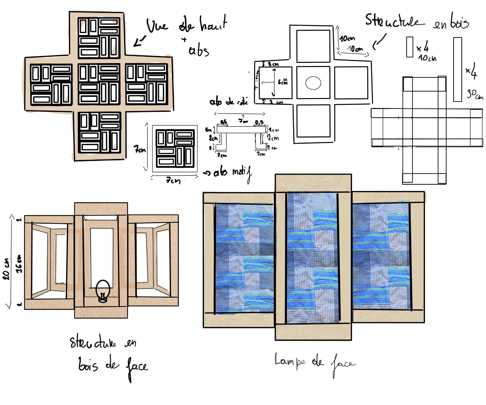
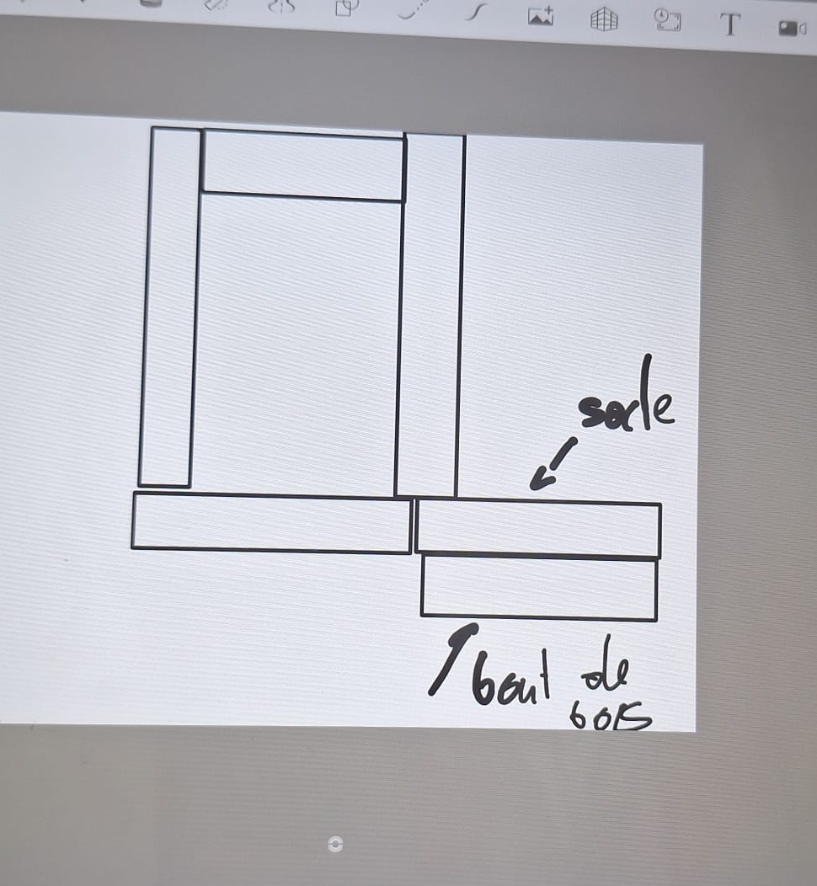
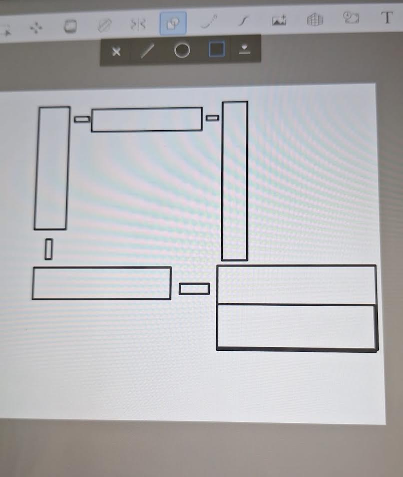
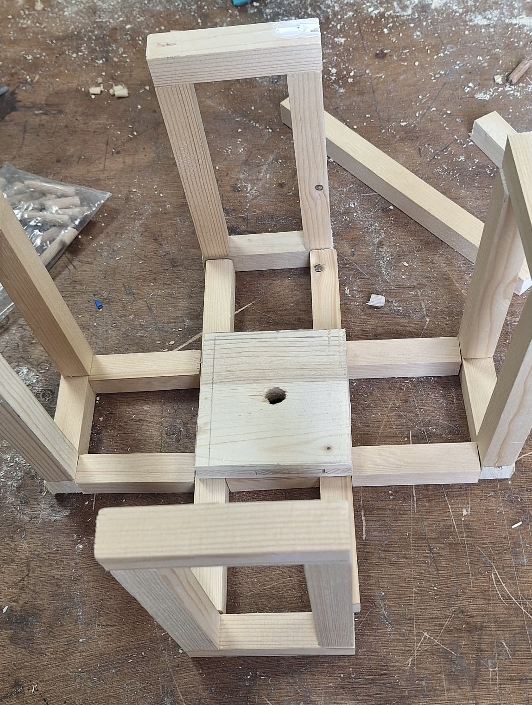
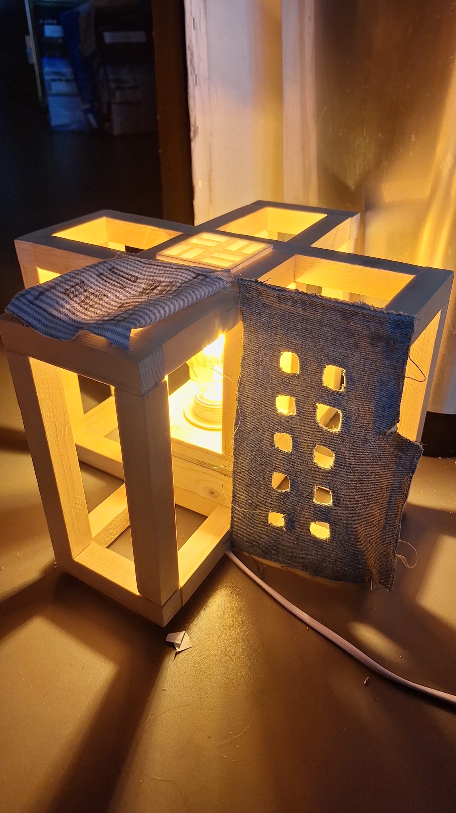
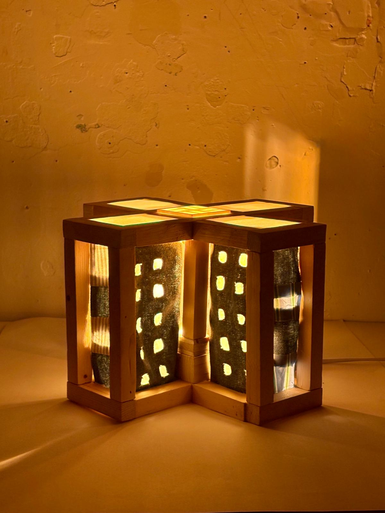
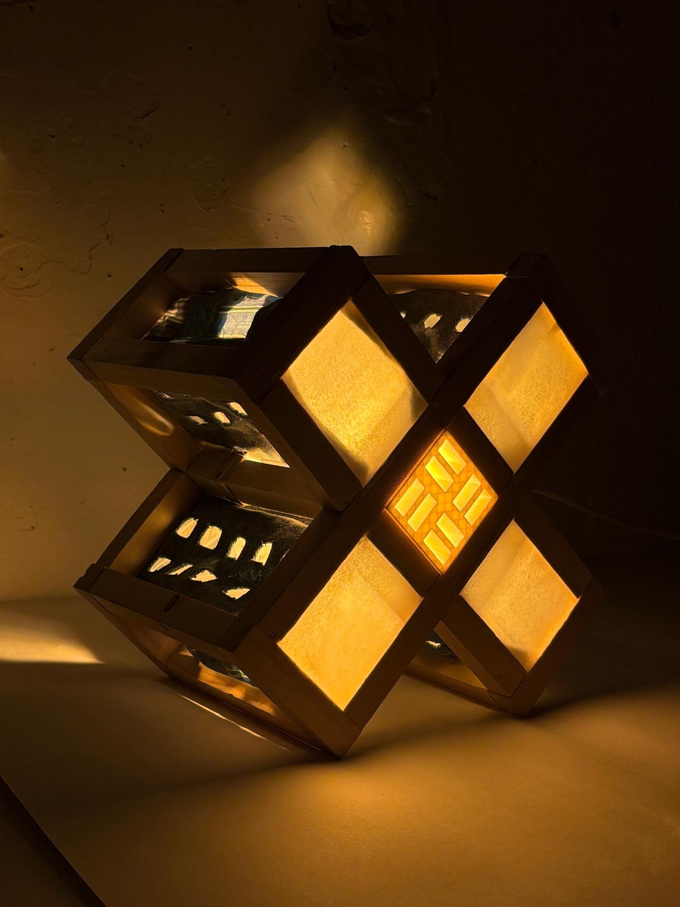

Lampe
Ce projet porte sur la conception d’une lampe combinant trois matériaux : le bois, l’impression 3D et le textile. La démarche s’appuie sur une inspiration issue des techniques d’assemblage japonaises du Tsugite et du Chidori, dont les principes ont été réinterprétés dans une approche contemporaine.
Le textile reprend un motif développé lors d’un précédent projet, ici réadapté pour s’intégrer à la conception de la lampe. Les éléments réalisés en impression 3D ont été spécifiquement conçus pour dialoguer avec ce motif et assurer une cohérence visuelle entre les différents matériaux.
L’ensemble associe ainsi techniques traditionnelles et fabrication numérique, avec une attention particulière portée aux détails, aux assemblages et à l’identité esthétique du produit.







